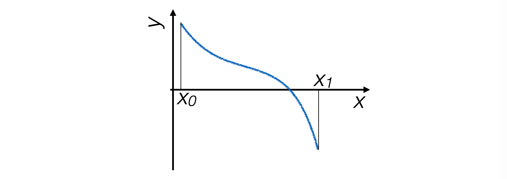
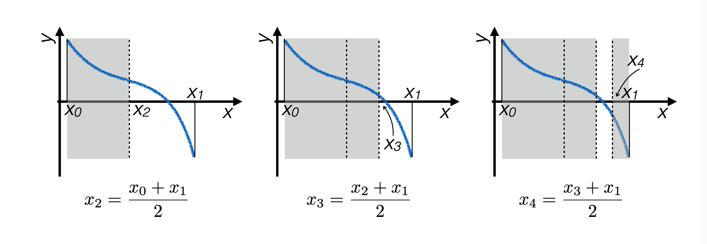
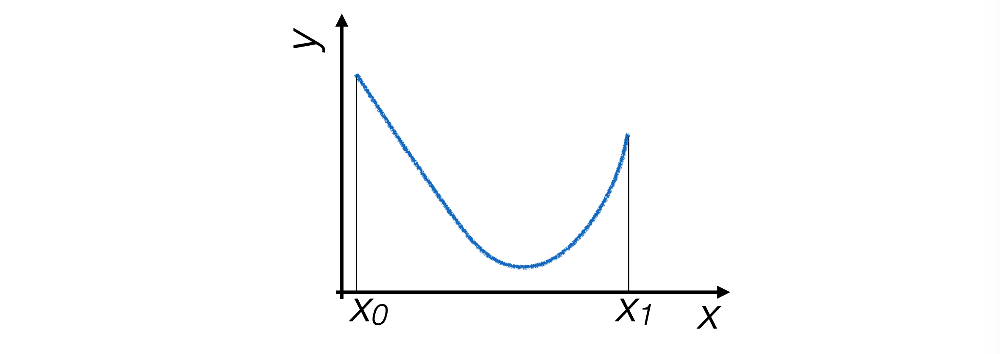
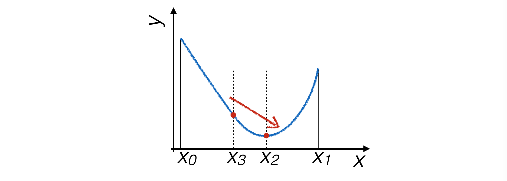
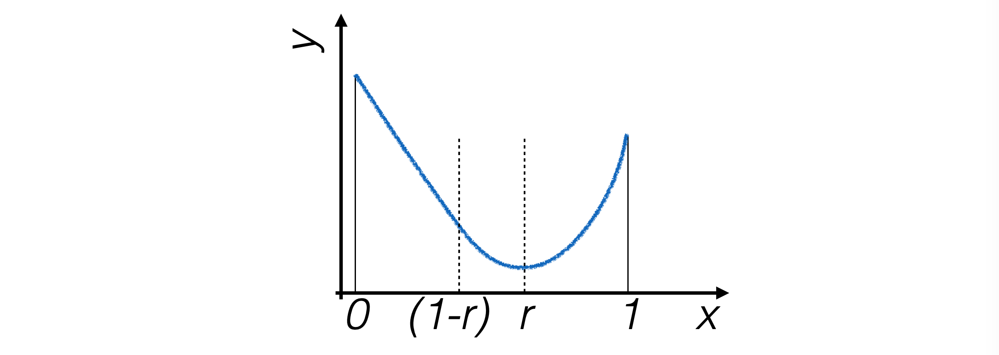
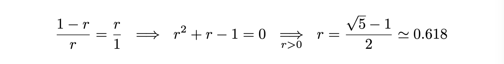
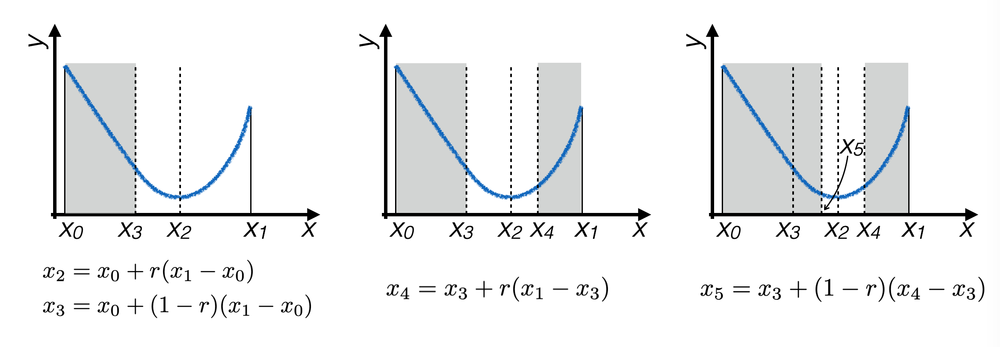

6. Finding Zeros and Extrema#
6.1. Finding the Zeros of a Function#
Numerical techniques exist to find the zeros of a function.
Simple Assumptions
Function g(x) is continuous and defined on a compact connected interval [x0, x1]
At the interval boundaries, the function values have opposite signs
The function has a single zero within the interval

6.1.1. Bisection Method#
The program doesn’t see the function as a whole, so the only way it can determine where the position of a zero is to estimate the function at specific points
Given the initial assumptions, the zero of the function is certainly located between two points where the function changes sign between them
The bisection technique iteratively narrows down this interval until it becomes smaller than a fixed resolution value 
6.1.2. Implementation of the Bisection Algorithm#
At each iteration, the midpoint of the interval containing the zero is calculated, and it’s determined whether the zero lies to its right or to its left
def bisezione ( g, # funzione di cui trovare lo zero xMin, # minimo dell'intervallo xMax, # massimo dell'intervallo prec = 0.0001): # precisione della funzione ''' Funzione che calcola zeri con il metodo della bisezione ''' xAve = xMin while ((xMax - xMin) > prec) : xAve = 0.5 * (xMax + xMin) if (g (xAve) * g (xMin) > 0.): xMin = xAve else : xMax = xAve return xAve
6.1.3. Recursive Implementation of the Bisection Algorithm#
The bisection algorithm repeatedly performs the same operation recursively
This behavior can also be implemented in
python, by writing a recursive function that calls itself:def bisezione_ricorsiva ( g, # funzione di cui trovare lo zero xMin, # minimo dell'intervallo xMax, # massimo dell'intervallo prec = 0.0001): # precisione della funzione ''' Funzione che calcola zeri con il metodo della bisezione ricorsivo ''' xAve = 0.5 * (xMax + xMin) if ((xMax - xMin) < prec): return xAve ; if (g (xAve) * g (xMin) > 0.): return bisezione_ricorsiva (g, xAve, xMax, prec) ; else : return bisezione_ricorsiva (g, xMin, xAve, prec) ;
Attention
In every recursive function, there must be two logical elements:
The call to the function itself
The exit condition from the sequence of self-calls
6.2. Finding Extremes: The Golden Ratio Method#
Simple Assumptions
Function g(x) continuously defined on a compact and connected interval [x0, x1]
The function has a single extremum within the interval

In this case as well, the process proceeds step by step, narrowing the interval at each iteration that contains the extremum until it becomes smaller than a predetermined precision value.
6.2.1. Restriction Criterion#
To find the minimum of a function, enough points are needed to understand its slope in different regions of the interval. Hence, four points are sought for, which determine three intervals.
The interval is narrowed by eliminating the segment where the minimum is certainly not located. 
The following iteration narrows down to \([x_3,x_1]\) if \(g(x_3) > g(x_2)\), to \([x_0, x_2]\) otherwise.
6.2.2. Optimization of Point Selection#
To optimize the calculation, the points \(x_2, x_3\) are chosen in a way that one of them can be used in the subsequent iteration, ensuring the same division ratio of the interval. 
For this to be possible, the following condition must hold: 
Thus, the iterative process narrows down around the extremum of the function: 
6.3. Putting Everything Together#
There are many techniques for finding zeros and extrema of functions, which are often the core of data analysis software.
A collection of algorithms can be found in the volume numerical recipes
In addition to the local problem of performing operations under good regularity conditions, generic algorithms must also find a way to reduce a general problem to simple cases.
For instance, in the case of finding minima, algorithms must avoid finding local minima and not identifying the global minimum of a function.
The functionality of an algorithm critically depends on the dimension of the function definition space.